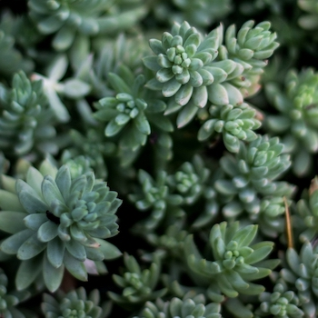
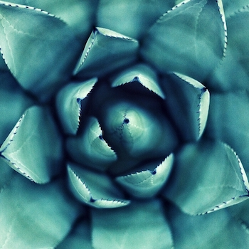
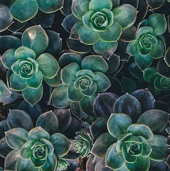
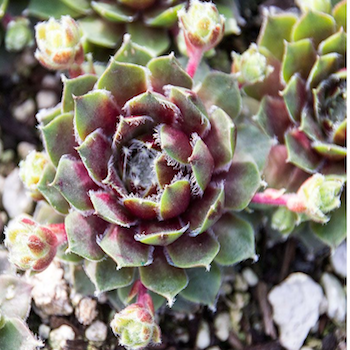
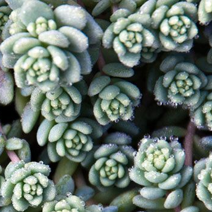
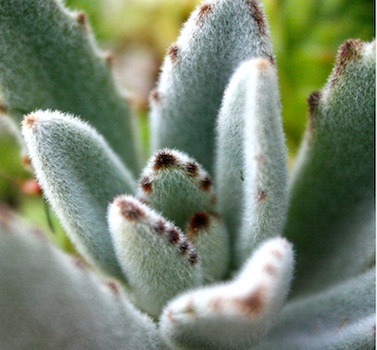

SEDUM
The plants vary from annual and creeping herbs to shrubs.
$3.50

ECHEVERIA AGAVE
They are drought-resistant,although they do better with regular deep watering and fertilizing.
$1.85

ECHEVERIA GREEN PRINCE
They can be propagated easily by separating offsets,but also by leaf cuttings,and by seed.
$1.80

SMALL GREEN ROSETTES
Small green rosettes have a nice fringe of cilia and a deep red heart. Their red offsets seem to glimmer with a fine white coating.
$2.30

MAJOR CORSICAN STONCROP
A gem among sedums. This perennial groundcover forms a carpet of blue-gray powdered leaves. In warmer areas it is evergreen. Blooms in summer. Water regularly during first year of growth to establish strong root system.
$4.60

KALANCHOE TOMENTOSA PANDA PLANT
A beautiful, furry looking, blue-gray succulent covered in tiny white hair and brown spots on the leaf edges. It keeps nice foliage and upright form year round.Fertilize during the spring and summer. It is heat and drought tolerant. Also tolerant of dry air, this variety makes a great houseplant or in landscapes and containers. Crassulaceae family.
$6.20